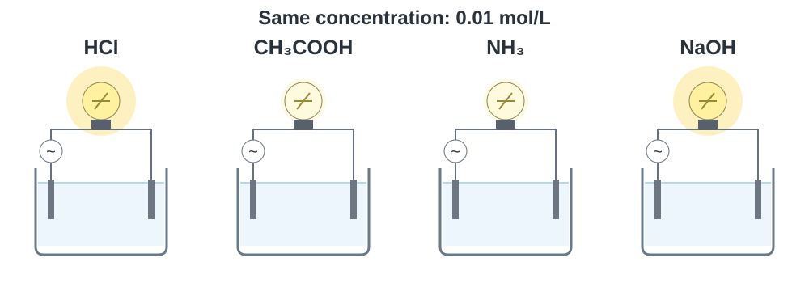
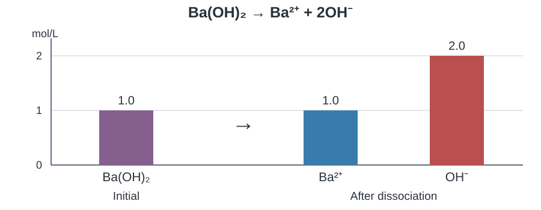

เคมี • เล่ม 4 • บทที่ 10 กรด–เบส
10.3 การแตกตัวของกรดแก่และเบสแก่
ใบที่ 1 จาก 3 · จากไอออนในภาพสู่ความเข้มข้น จำนวนโมล และมวล
สรุปสาระใต้หัวข้อ และแสดงวิธีคิดในพื้นที่ของแต่ละข้อ เปิดเฉลยเพื่อตรวจเหตุผล สมการ และหน่วย
1 สารละลายนำไฟฟ้าได้อย่างไร
เปรียบเทียบสารละลายที่มีความเข้มข้น 0.01 mol/L เท่ากัน ใช้อุปกรณ์และอุณหภูมิเดียวกัน ภาพแสดงความสว่างเชิงเปรียบเทียบ ไม่ใช่มาตรวัดจำนวนไอออน

คำถาม 1
คำถาม 2
ไอออนกับการนำไฟฟ้า
ตรวจสอบความเข้าใจ · ลำดับ pH
กรดมี pH ต่ำกว่า 7 และเบสมี pH สูงกว่า 7 ที่ 25 °C เมื่อความเข้มข้นเท่ากัน กรดที่แตกตัวได้มากกว่ามี pH ต่ำกว่า ส่วนเบสที่เกิด OH- ได้มากกว่ามี pH สูงกว่า
2 ความแรงกับความเข้มข้น
กรด–เบสแก่ และกรด–เบสอ่อน
ความเข้มข้นไม่ใช่ความแรง
คำถาม 3
กรดแก่ที่ใช้ในหัวข้อนี้
HCl, HBr, HI, HNO3 และ HClO4
HF เป็นกรดอ่อน ส่วน H2SO4 แตกตัวขั้นแรกได้สมบูรณ์ แต่ขั้นที่สองไม่สมบูรณ์ จึงห้ามคูณจำนวน H ในสูตรเป็นความเข้มข้นของ H3O+ โดยอัตโนมัติ
เบสแก่ที่ใช้ในหัวข้อนี้
LiOH, NaOH, KOH, Ca(OH)2, Sr(OH)2 และ Ba(OH)2
พิจารณาส่วนที่ละลายน้ำแล้ว M(OH)2 1 mol ให้ OH- 2 mol ข้อคำนวณในใบนี้ถือว่าสารละลายได้ตามเงื่อนไขที่โจทย์ให้
คำถาม 4
3 อ่านอัตราส่วนจากสมการ
สมการและความเข้มข้นของไอออน
เมื่อกรดหรือเบสแก่มีความเข้มข้นเริ่มต้น C ให้ใช้สัมประสิทธิ์ในสมการที่ดุลแล้วหาไอออนแต่ละชนิด สำหรับสองสมการนี้ ไอออนแต่ละชนิดมีความเข้มข้นเท่ากับ C
คำถาม 5
คำถาม 6
คำถาม 7
ตรวจสอบความเข้าใจ · แผนภูมิแท่ง

ก่อนแตกตัวใช้ 1.0 mol/L เป็นค่าตั้งต้น หลังแตกตัว Ba(OH)2 เหลือประมาณ 0, Ba2+ = 1.0 และ OH- = 2.0 mol/L แท่งของ OH- จึงสูงเป็นสองเท่าของ Ba2+
4 จากความเข้มข้นไปจำนวนโมล
ความเข้มข้น จำนวนโมล และมวล
C หน่วย mol/L, V เป็นปริมาตรสารละลายหน่วย L, n หน่วย mol และ M เป็นมวลโมลาร์หน่วย g/mol แปลง mL เป็น L โดยหาร 1000 ก่อนแทนค่า
ตัวอย่าง 2 (สสวท.) · แก๊ส HBr
อัตราส่วน 1 : 1 : 1 จึงต้องมีความเข้มข้นตั้งต้นของ HBr เท่ากับ 0.60 mol/L
คำถาม 8
250 mL = 0.250 L และ H3O+ เข้มข้น 0.20 mol/L
ตรวจสอบความเข้าใจ · HI
ไอออนทั้งสองมีจำนวนโมลเท่ากัน
5 เติมน้ำแล้วอะไรคงเดิม
การเจือจางสารละลายกรด–เบสแก่
ตัวอย่าง 3 (สสวท.) สารละลาย Sr(OH)2 0.40 L มี OH- 1.0 mol/L เติมน้ำจนปริมาตรรวมเป็น 2.00 L
ตัวอย่าง 3 (สสวท.) · ก · จำนวนโมล
หลังเติมน้ำ จำนวนโมลของแต่ละไอออนยังเท่าเดิม
ตัวอย่าง 3 (สสวท.) · ข · ความเข้มข้นใหม่
คำถาม 9
เริ่มต้น OH- = 2(0.040) = 0.080 mol/L
6 ย้อนกลับไปหามวลที่ใช้
ลำดับการคำนวณมวล
- หาจำนวนโมลของไอออน: นำความเข้มข้นไอออนที่โจทย์ต้องการ (mol/L) คูณปริมาตรสารละลาย (L) จะได้จำนวนโมลไอออน (mol) โดยแปลง mL เป็น L ก่อน
- หาจำนวนโมลของสารที่จะชั่ง: ใช้อัตราส่วนจากสมการแตกตัว เช่น KOH 1 mol ให้ OH- 1 mol แต่ Ba(OH)2 1 mol ให้ OH- 2 mol ดังนั้นถ้าใช้ Ba(OH)2 ต้องนำโมล OH- หาร 2
- หามวลที่ต้องชั่ง: นำจำนวนโมลของสารจากขั้นที่ 2 คูณมวลโมลาร์ของสารนั้น (g/mol) จะได้มวลเป็นกรัม
ตรวจสอบความเข้าใจ · KOH
อัตราส่วน 1 : 1 ต้องใช้ KOH 0.125 mol
แบบฝึกหัด 10.3 · ข้อ 1
คำถาม 10
Chemistry • Book 4 • Chapter 10 Acids and Bases
10.3 Strong Acids and Strong Bases
Sheet 1 of 3 · From ions to concentration, amount and mass
Write the key ideas under each heading. Use the space under each question to show your reasoning, equations and units, then compare with the solution.
1 How do solutions conduct electricity?
Compare solutions at the same concentration, 0.01 mol/L, with the same apparatus and temperature. Bulb brightness is qualitative, not an ion counter.
Question 1
Question 2
Ions and conductivity
IPST understanding · pH order
At 25 °C, acidic solutions have pH below 7 and basic solutions have pH above 7. At equal concentration, greater acid ionization lowers pH, while greater hydroxide formation raises pH.
2 Strength and concentration
Strong and weak acids and bases
Concentration and strength are different
Question 3
Strong acids used here
HCl, HBr, HI, HNO3 and HClO4
HF is weak. The first ionization of H2SO4 is essentially complete but the second is partial, so do not automatically multiply by the number of H atoms to find hydronium concentration.
Strong bases used here
LiOH, NaOH, KOH, Ca(OH)2, Sr(OH)2 and Ba(OH)2
For the dissolved portion, 1 mol of M(OH)2 supplies 2 mol of hydroxide. The numerical problems assume the stated solution can be prepared.
Question 4
3 Read the ratio from the equation
Equations and ion concentrations
For initial concentration C, use the coefficients in the balanced equation to find each ion concentration. In these two equations, each product ion has concentration C.
Question 5
Question 6
Question 7
IPST understanding · Bar chart
Use 1.0 mol/L as the initial concentration. After dissociation, undissociated solute is approximately zero, barium is 1.0 mol/L and hydroxide is 2.0 mol/L, so the hydroxide bar is twice as high.
4 From concentration to amount
Concentration, amount and mass
C is in mol/L, V is solution volume in L, n is in mol and M is molar mass in g/mol. Divide mL by 1000 before substituting.
Example 2 (IPST) · HBr gas
The 1 : 1 : 1 ratio requires an initial HBr concentration of 0.60 mol/L.
Question 8
250 mL = 0.250 L and the hydronium concentration is 0.20 mol/L.
IPST understanding · HI
The two ions are formed in equal amounts.
5 What stays the same on dilution?
Diluting a strong-acid or strong-base solution
IPST Example 3. A 0.40 L Sr(OH)2 solution contains 1.0 mol/L hydroxide. Add water to make a final volume of 2.00 L.
Example 3 (IPST)(a) · Amounts
Each ion has the same amount after dilution.
Example 3 (IPST)(b) · Final concentrations
Question 9
Initially hydroxide is 2(0.040) = 0.080 mol/L.
6 Work back to the required mass
Finding the mass needed
- Find the amount of ions needed: multiply the required ion concentration (mol/L) by the solution volume (L) to obtain moles of ions. Convert mL to L first.
- Find the amount of compound to weigh: use the ratio in its balanced ionization equation. Each mole of KOH gives 1 mol of OH-, whereas each mole of Ba(OH)2 gives 2 mol of OH-. For Ba(OH)2, divide the required moles of OH- by 2.
- Find the mass to weigh: multiply the moles of compound from step 2 by that compound’s molar mass (g/mol) to obtain the mass in grams.
IPST understanding · KOH
The 1 : 1 ratio requires 0.125 mol KOH.
IPST Exercise 10.3 · Q1
Question 10